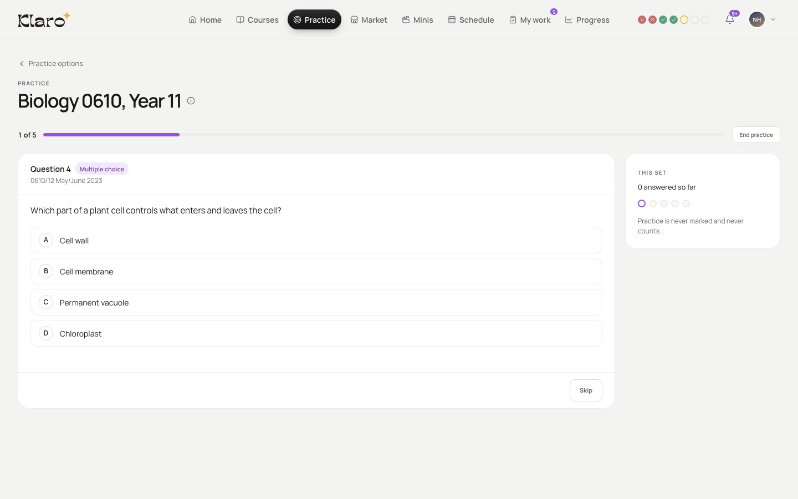

Got one wrong? See where it was explained.
Practise real past-paper questions. Miss one and Klaro shows the right answer, the page in your book and the moment in your lecture.
About practice questions
- Practise past-paper questions from your course.
- Not quite. Klaro shows the right answer…
- …and where it was explained: the page in your book and the moment in your lecture.
- One tap, and your tutor explains it.